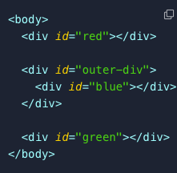
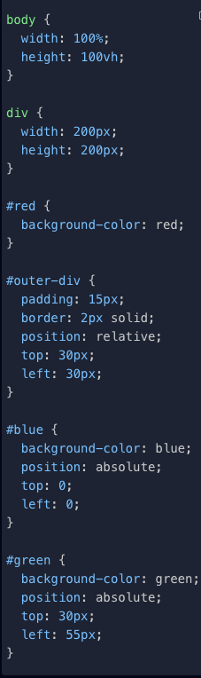

Position: Absolute
-
If we position an element with "absolute", we break it out of the page's flow. If we then give the element a "top", "right", "bottom", and/or "left" property. It is placed according to the top-left of its closest non-static element.
-
For instance:

-
The above shows "#red", "#blue", and "#green" elements, with one of them nested inside of an "#outside-div" element. If we set the "position" of "#outer-div" to "relative" and the "#blue" and "#green" elements to "absolute":

-
This is the rendered code:

-
Because the "#blue" element is inside of another positioned element, it is absolutely positioned in the top-left corner of "outer-div" when "top" and "left" are set to zero.
-
Conversely, the "#green" element is absolutely positioned at the top-left corner of the <body> element since that is the closest positioned parent. We've moved it 30px and 55px from the top and left edges of the screen.